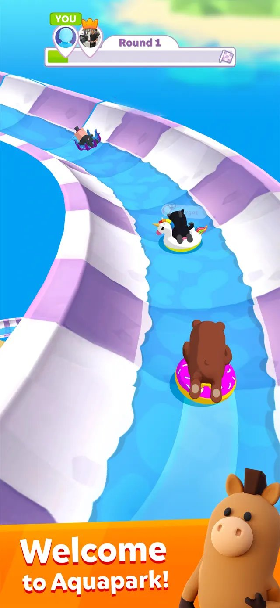
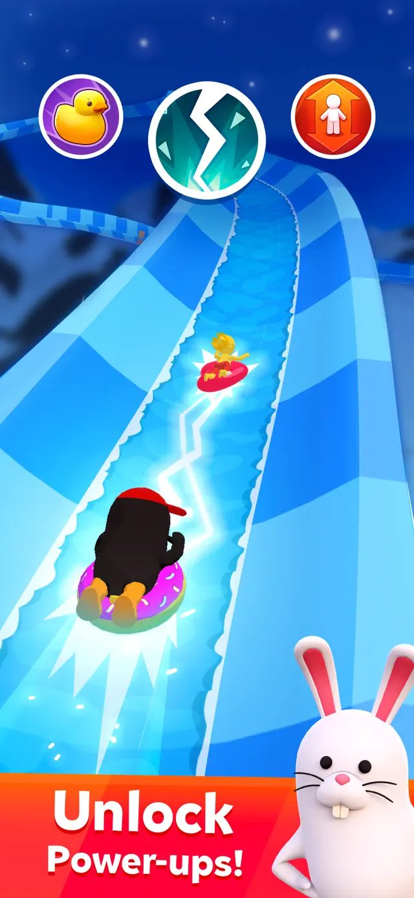
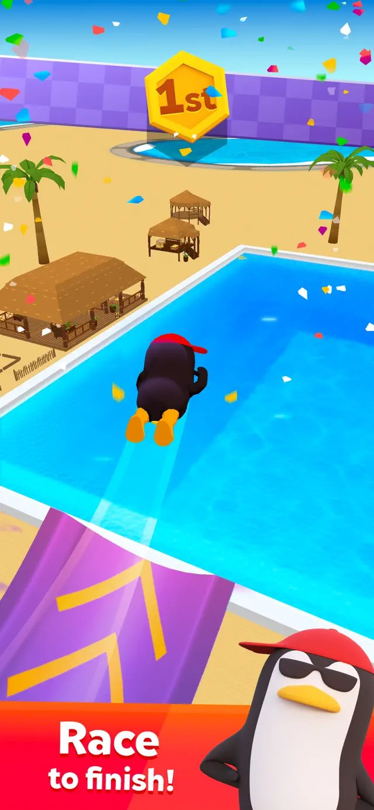

Introduction
Aquapark Surfer Race.io is a high-speed aquatic racing game where players careen down massive water slides and ocean waves. Unlike traditional racers, you ride skimboards, jet skis, and inflatable rings, focusing on momentum and flow rather than vehicle tuning. What makes it unique is the blend of waterslide physics with sabotage mechanics and ramp stunts. Players love it for its chaotic yet fluid gameplay, where hitting acceleration zones grants invincibility bursts to blast through rivals. It is a fast-paced, two-minute desktop race that rewards reading the course and carving smooth lines through dynamic aquatic obstacles. If you enjoy momentum-based racing with a splash of contact chaos, this game delivers pure, adrenaline-fueled waterpark action.
Getting Started

To start your aquatic journey, simply select your preferred ride—whether it’s a nimble skimboard, a powerful jet ski, or a buoyant inflatable ring—and dive into the first dynamic course. The controls are intuitive: steer your surfer down the winding water slides and ocean waves by swiping or using directional inputs to hold the optimal racing line through sharp curves. Your primary objective is to reach the finish line first while dodging obstacles and rival surfers. Basic mechanics revolve around maintaining momentum; sharp, reactive corrections will kill your speed. Instead, focus on carving smooth, continuous turns like you are riding a natural wave. Keep an eye out for acceleration zones scattered along the track. Hitting these boosters not only increases your speed but also grants a brief invincibility window, which is crucial for surviving the chaotic sabotage energy of your opponents. Mastering these basic steering and boosting mechanics is your first step to conquering the waterpark.
Basic Tips
Here are essential tips for beginners to dominate the water slides: 1. Prioritize Acceleration Zones: Always aim for boosters, even if it means taking a slightly wider line around a curve. The massive speed boost easily repays the minor detour. 2. Steer Smoothly: Treat the aquatic course like a natural wave. Smooth steering carries much more speed than sharp, jerky corrections when dodging obstacles. 3. Read Ahead: Avoid the rookie mistake of swerving reactively at every single obstacle. Look two obstacles ahead and carve one smooth, continuous line through both. 4. Time Your Overtakes: Do not force risky passes without power. Overtake rival surfers specifically during your invincibility windows granted by the acceleration zones. 5. Choose the Right Ride: Experiment with skimboards, jet skis, and inflatable rings to find which vehicle best matches your steering style and handles the dynamic ocean waves.
Advanced Strategies

For experienced players looking to secure the podium, advanced strategies focus on course management and sabotage. 1. Chain Boosters for Invincibility: Map out the track to hit acceleration zones back-to-back. By chaining these boosters, you can maintain near-continuous invincibility, allowing you to aggressively ram through rival surfers without losing momentum. 2. Optimize Ramp Stunts: When hitting ramp stunts, ensure your approach angle is perfectly aligned. A clean launch maximizes your airtime and landing speed, whereas a bad angle will cause a severe speed penalty upon hitting the water slide. 3. Defensive Sabotage: Use your invincibility bursts not just for offense, but to block the racing lines of players behind you. By occupying the optimal path through a narrow water slide section during a boost, you force rivals into the slower, outer lanes. 4. Master the Ocean Waves: Unlike static water slides, ocean wave sections require micro-adjustments. Anticipate the swell and use the wave's natural momentum to slingshot past slower opponents.
Pro Tips

Separate yourself from the pack with these expert-level insights: 1. Minimize Micro-Corrections: The absolute fastest players barely move the steering input. Trust your initial line and let the skimboard or jet ski drift naturally through the curve. 2. Bait the Sabotage: Intentionally leave a gap in your racing line to lure an aggressive opponent into a trap, then use a sudden acceleration zone to snap back to the optimal path while they crash into obstacles. 3. Perfect the Drop-In: The first three seconds of the race dictate the flow. Execute a flawless drop-in off the starting ramp to secure an early acceleration zone before the pack bottlenecks.
Conclusion
Aquapark Surfer Race.io perfectly blends high-speed waterslide action with strategic boosting and sabotage. By mastering smooth steering, reading the course ahead, and utilizing invincibility bursts, you can conquer the most chaotic ocean waves and water slides. Jump in, choose your favorite ride—whether a skimboard, jet ski, or inflatable ring—and carve your way to the podium in this thrilling, momentum-based aquatic racer today!